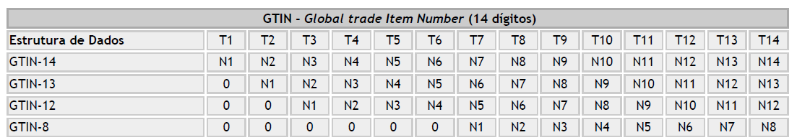
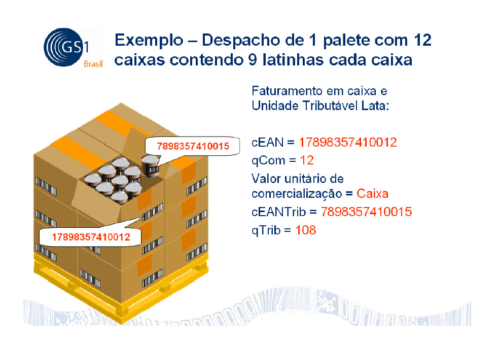
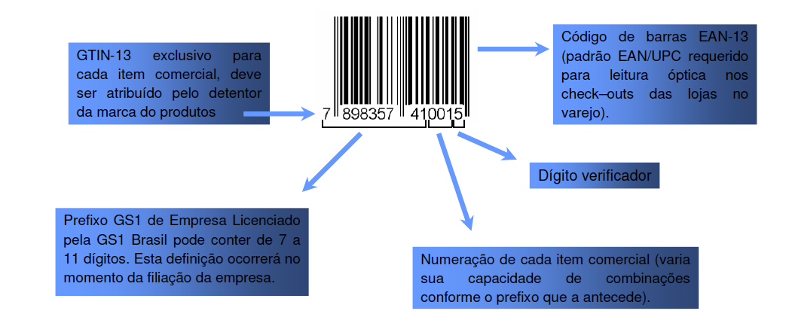
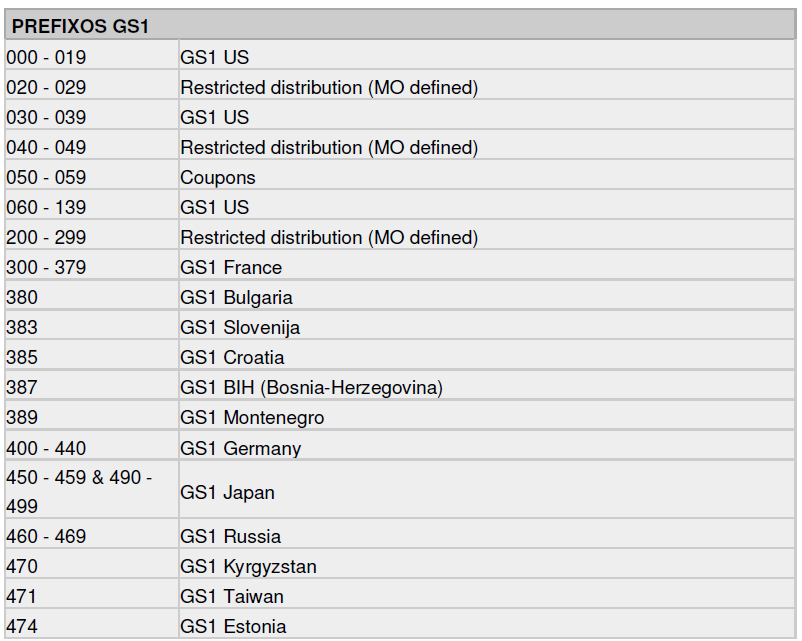

<!DOCTYPE HTML>
<html>
<head>
   <title>Faq &gt; FAQ - GTIN</title>
   <meta http-equiv="Content-Type" content="text/html; charset=UTF-8" />   
   /* <meta name="generator" content="Help &amp; Manual" /> */
   <meta name="keywords" content="" />
   <meta name="description" content="Enter topic text here. &nbsp;1. O que é o GTIN ? GTIN, acrônimo para Global Trade Item Number é um identificador para itens comerciais desenvolvido e controlado pela GS1, antiga EAN/" />
   <meta http-equiv="X-UA-Compatible" content="IE=8" />
   <link type="text/css" href="default.css" rel="stylesheet" />
   <link type="text/css" href="custom.css" rel="stylesheet">

   <style TYPE="text/css" media="screen"> 
      html, body { margin:0; 
             padding:0; 
             overflow: hidden;
             background: #FFFFFF; 
       } 

      div#printheader { display: none; }
      #idheader { width:100%; 
                  height:auto; 
                  padding: 0; 
                  margin: 0; 
       } 
      #callout-table, #overview-table {display:block; position:relative; top:0; left:0;}
      #callout-icon {display:block; position:absolute; top:-11px; left:-11px;}
      #callout-icon-flag {display:block; position:absolute; top:-11px; left:-8px;}
      #callout-table a {text-decoration: none; color: blue;}
      #callout-table a:visited {text-decoration: none; color: blue;}
      #overview-table a {text-decoration: none; color: black;}
      #overview-table a:visited {text-decoration: none; color: black;}
      #callout-table a:hover, #overview-table a:hover {text-decoration: underline;}       
      p.help-url { margin: 20px 0 5px 0; text-align: center; font-size: 80%; text-decoration: none }      
      #switchtoggles { text-align: right; padding: 0 2px 0 0; font-size: 90%; } 
  </style>
   <noscript>
   <style type="text/css">
   html, body { overflow: auto; }
   </style> 
   </noscript>
   <style type="text/css" media="print">
      span.f_Heading1 { color: black; }
      #idheader, #printheader img { display:none; }
      #printheader { display: block; margin-top: 20px; }
      #idcontent { margin-top: 10px; }
   </style>   

   <script type="text/javascript" src="jquery.js"></script>
   <script type="text/javascript" src="helpman_settings.js"></script>
   <script type="text/javascript" src="helpman_topicinit.js"></script>
   <script type="text/javascript" src="nsh.js"></script>

   <script type="text/javascript">
     HMSyncTOC("index.html", "gtin.html");
   </script>
   <script type="text/javascript" src="highlight.js"></script>
   <script type="text/javascript">
     $(document).ready(function(){highlight();});
   </script>
</head>
<body>
<div id="breadcrumbs" style="display:none"><a href="facs.html">Faq</a></div>

<div id="printheader"><h1 class="p_Heading1"><span class="f_Heading1">FAQ - GTIN</span></h1>
</div>
<div id="idheader">
<div id="idheaderbg">
<table style="width:100%;border:none;margin:0px;background:url(topic_header_background.jpg)" cellspacing="0" cellpadding="0"> 
  <tr valign="bottom">
    <td align="left" valign="bottom" class="topichead">
   <p class="crumbs" id="idnav"><b>Navigation:</b>&nbsp;
   
   <a href="facs.html">Faq</a>&nbsp;&gt;</p>
   <h1 class="p_Heading1"><span class="f_Heading1">FAQ - GTIN</span></h1>

    </td>
    <td align="right" width="120" valign="middle" class="topichead" id="idnav">
    
     <a href="copia_chave_.html"
        onmouseover="document.images.prev.src='hm_btn_navigate_prev_orange.png'" 
        onmouseout="document.images.prev.src='hm_btn_navigate_prev.png'"
        ></a><a href="facs.html"
        onmouseover="document.images.main.src='hm_btn_navigate_top_orange.png'" 
        onmouseout="document.images.main.src='hm_btn_navigate_top.png'"></a><a href="faq_dll.html"
        onmouseover="document.images.next.src='hm_btn_navigate_next_orange.png'" 
        onmouseout="document.images.next.src='hm_btn_navigate_next.png'"></a>
    </td>
  </tr>  
</table>
<!-- The following code displays Expand All/Collapse All links  below the header in topics containing toggles -->
  
</div>
</div>  

<div id="idcontent"><div id="innerdiv">
<!-- Ask Internet Explorer 6.users to update their obsolete and dangerous browser --> 
<!--[if lt IE 7]><div style=' clear: both; height: 59px; padding:0 0 0 15px; position: relative;'><a href="http://windows.microsoft.com/en-US/internet-explorer/products/ie/home?ocid=ie6_countdown_bannercode"></a></div><![endif]-->

<!--ZOOMRESTART-->
<p><span style="font-size: 12pt;">Enter topic text here.</span></p>
<p style="text-align: center;"></p>
<p><span style="font-size: 12pt; font-family: Helvetica-Bold; font-weight: bold;">1. O que é o GTIN ?</span></p>
<p style="text-align: justify;"><span style="font-size: 12pt; font-family: Helvetica;">GTIN, acrônimo para Global Trade Item Number é um identificador para itens comerciais desenvolvido e controlado pela GS1, antiga EAN/UCC. GTINs, anteriormente chamado códigos EAN, são atribuídos para qualquer item (produto ou serviço) que pode ser precificado, pedido ou faturado em qualquer ponto da cadeia de suprimentos. O GTIN é utilizado para recuperar informação pré-definida e abrange desde as matérias primas até produtos acabados.</span></p>
<p style="text-align: justify;"><span style="font-size: 12pt; font-family: Helvetica;">GTIN é um termo “guarda-chuva” para descrever toda a familia de identificação das estruturas de dados GS1 para itens comerciais (produtos e serviços). GTINs podem ter o tamanho de 8, 12, 13 ou 14 dígitos e podem ser construídos utilizando qualquer uma das quatro estruturas de numeração dependendo da aplicação.</span></p>
<p style="text-align: justify;"><span style="font-size: 12pt; font-family: Helvetica;">O GTIN-8 é codificado no código de barras EAN-8. GTIN-12 é mais comumente utilizado no código de barras UPC-A, o GTIN-13 é codificado no EAN-13 e o GTIN-14 no ITF-14.</span></p>
<p style="text-align: justify;"><span style="font-size: 12pt; font-family: Helvetica;">Há 4 maneiras de construir o GTIN :</span></p>
<p style="text-align: justify;">&nbsp;</p>
<p style="text-align: justify;"></p>
<p style="text-align: justify;">&nbsp;</p>
<p style="text-align: justify;">&nbsp;</p>
<p><span style="font-size: 12pt; font-family: Helvetica-Bold; font-weight: bold;">Nomes anteriores do GTIN:</span></p>
<p><span style="font-size: 12pt; font-family: Helvetica;">GTIN-8 </span><span style="font-size: 12pt; font-family: TTE1802D78t00;"> </span><span style="font-size: 12pt; font-family: Helvetica;">antigo EAN-8, </span></p>
<p><span style="font-size: 12pt; font-family: Helvetica;">GTIN-12 </span><span style="font-size: 12pt; font-family: TTE1802D78t00;"> </span><span style="font-size: 12pt; font-family: Helvetica;">antigo Código UPC, </span></p>
<p><span style="font-size: 12pt; font-family: Helvetica;">GTIN-13 </span><span style="font-size: 12pt; font-family: TTE1802D78t00;"> </span><span style="font-size: 12pt; font-family: Helvetica;">antigo Código EAN, </span></p>
<p><span style="font-size: 12pt; font-family: Helvetica;">GTIN-14 </span><span style="font-size: 12pt; font-family: TTE1802D78t00;"> </span><span style="font-size: 12pt; font-family: Helvetica;">antigo DUN-14</span></p>
<p>&nbsp;</p>
<p><span style="font-size: 12pt; font-family: Helvetica-Bold; font-weight: bold;">2. O que é cEAN ?</span></p>
<p style="text-align: justify;"><span style="font-size: 12pt; font-family: Helvetica;">Código de barras GTIN (antigo código EAN) do produto que está sendo faturado na NF-e. O GTIN poderá ser GTIN-8 (antigo EAN-8), GTIN-12 (antigo UPC), GTIN-13 (antigo EAN), GTIN-14 (antigo DUN-14).</span></p>
<p>&nbsp;</p>
<p>&nbsp;</p>
<p><span style="font-size: 12pt; font-family: Helvetica-Bold; font-weight: bold;">3. O que é o cEANTrib ?</span></p>
<p style="text-align: justify;"><span style="font-size: 12pt; font-family: Helvetica;">Código de barras GTIN (antigo código EAN) do produto tributável, ou seja, a unidade que é utilizada para calcular o ICMS de Substituição Tributária, como por exemplo a unidade de venda no varejo. GTIN poderá ser GTIN-8 (antigo EAN-8), GTIN-12 (antigo UPC), GTIN-13 (antigo EAN), GTIN-14 (antigo DUN-14).</span></p>
<p>&nbsp;</p>
<p><span style="font-size: 12pt; font-family: Helvetica-Bold; font-weight: bold;">4. Qual a diferença entre cEAN e cEANTrib?</span></p>
<p style="text-align: justify;"><span style="font-size: 12pt; font-family: Helvetica;">Quando o produto faturado for o mesmo que o produto tributável o código enviado no cEAN e no cEANTrib será o mesmo, caso sejam diferentes o cEAN é o código de barras GTIN (antigo código EAN) do produto que está sendo faturado na NF-e e o cEANTrib será o código de barras GTIN (antigo EAN) do produto tributável, ou seja, a unidade que é utilizada para</span></p>
<p><span style="font-size: 12pt; font-family: Helvetica;">calcular o ICMS de Substituição Tributária.</span></p>
<p>&nbsp;</p>
<p style="text-align: justify;"><span style="font-size: 12pt; font-family: Helvetica;">Por exemplo: Compra de um palete com 12 caixas de produtos e cada caixa contém 9 latinhas, onde a venda (faturamento) foi realizado em caixas e a unidade tributável é a lata. O cEAN será o código de barras da caixa com 9 latas e o cEANTrib o código da lata.</span></p>
<p style="text-align: justify;">&nbsp;</p>
<p style="text-align: justify;">&nbsp;</p>
<p style="text-align: justify;"></p>
<p><span style="font-size: 12pt; font-family: Helvetica-Bold; font-weight: bold;">5. Como é a estrutura do GTIN-13 ?</span></p>
<p style="text-align: justify;">&nbsp;</p>
<p style="text-align: justify;">&nbsp;</p>
<p style="text-align: justify;">&nbsp;</p>
<p style="text-align: justify;"></p>
<p style="text-align: justify;">&nbsp;</p>
<p style="text-align: justify;">&nbsp;</p>
<p><span style="font-size: 12pt; font-family: Helvetica-Bold; font-weight: bold;">6. Quem é o responsável pela atribuição dos GTINs?</span></p>
<p><span style="font-size: 12pt; font-family: Helvetica;">A GS1 é a responsável pelas atribuições dos GTINs. No Brasil, a GS1 Brasil, antiga EAN</span></p>
<p><span style="font-size: 12pt; font-family: Helvetica;">Brasil é sua representante.</span></p>
<p><span style="font-size: 12pt; font-family: Helvetica;">www.gs1br.org e (11) 3068-6229</span></p>
<p>&nbsp;</p>
<p>&nbsp;</p>
<p><span style="font-size: 12pt; font-family: Helvetica-Bold; font-weight: bold;">7. Meu produto não possui o GTIN, preciso me filiar à GS1 Brasil por causa da obrigatoriedade na NF-e?</span></p>
<p><span style="font-size: 12pt; font-family: Helvetica;">Caso a empresa queira ter o controle automatizado, e fazer a referência entre o código de barras do produto e a NF-e, a dona da marca deste produto deverá se filiar para obter o GTIN e aplicar o código de barras, mas pelo ajuste SINIEF não existe a obrigatoriedade.</span></p>
<p>&nbsp;</p>
<p>&nbsp;</p>
<p><span style="font-size: 12pt; font-family: Helvetica-Bold; font-weight: bold;">8. Quais os benefícios do GTIN na NF-e ?</span></p>
<p><span style="font-size: 12pt; font-family: 'Arial Unicode MS', 'Lucida Sans Unicode', 'Arial';"> </span><span style="font-size: 12pt; font-family: Helvetica;">Automação no Recebimento</span></p>
<p><span style="font-size: 12pt; font-family: 'Arial Unicode MS', 'Lucida Sans Unicode', 'Arial';"> </span><span style="font-size: 12pt; font-family: Helvetica;">Melhoria no Controle de estoque</span></p>
<p><span style="font-size: 12pt; font-family: 'Arial Unicode MS', 'Lucida Sans Unicode', 'Arial';"> </span><span style="font-size: 12pt; font-family: Helvetica;">Conferencia do Pedido enviado com a NF-e recebida</span></p>
<p><span style="font-size: 12pt; font-family: 'Arial Unicode MS', 'Lucida Sans Unicode', 'Arial';"> </span><span style="font-size: 12pt; font-family: Helvetica;">Código único para controle de produtos</span></p>
<p><span style="font-size: 12pt; font-family: 'Arial Unicode MS', 'Lucida Sans Unicode', 'Arial';"> </span><span style="font-size: 12pt; font-family: Helvetica;">Rastreabilidade</span></p>
<p>&nbsp;</p>
<p>&nbsp;</p>
<p><span style="font-size: 12pt; font-family: Helvetica-Bold; font-weight: bold;">9. Para produtos importados, posso utilizar o código da origem como GTIN?</span></p>
<p><span style="font-size: 12pt; font-family: Helvetica;">Sim</span></p>
<p>&nbsp;</p>
<p>&nbsp;</p>
<p><span style="font-size: 12pt; font-family: Helvetica-Bold; font-weight: bold;">10. Como sei se o produto faturado na NF-e tem o GTIN?</span></p>
<p style="text-align: justify;"><span style="font-size: 12pt; font-family: Helvetica;">Se a empresa que atribuiu o código do produto for associada a GS1 em qualquer lugar do mundo, seus produtos serão iniciados por 3 dígitos que representam a GS1 em que ela se associou. Por exemplo, se a associação for realizada na GS1 Brasil o GTIN será iniciado por “789” ou “790”. Os Prefixos GS1 não fornecem a identificação do país de origem do produto</span></p>
<p><span style="font-size: 12pt; font-family: Helvetica;">e sim a identificação da GS1 que atribui a licença a este produto.</span></p>
<p><span style="font-size: 12pt; font-family: Helvetica;">A GS1 dispõe do serviço GEPIR/VGAP que busca a detentora da licença do produto a partir do GTIN. Este serviço pode ser acessado através do link:</span></p>
<p><span style="font-size: 12pt; font-family: Helvetica; color: #f36334;"><a href="http://www.gs1br.org/main.jsp?lumPageId=402881762CC229EF012CF0781D095DE9" target="_blank" class="weblink">http://www.gs1br.org/main.jsp?lumPageId=402881762CC229EF012CF0781D095DE9</a></span></p>
<p>&nbsp;</p>
<p><span style="font-size: 12pt; font-family: Helvetica;">Entre em contato com a GS1 do país em que a detentora da marca é associada para mais informações:</span></p>
<p><span style="font-size: 12pt; font-family: Helvetica;">GS1 Brasil – </span><span style="font-size: 12pt; font-family: Helvetica; color: #f36334;">www.gs1brasil.org.br</span><span style="font-size: 12pt; font-family: Helvetica;">, </span><span style="font-size: 12pt; font-family: Helvetica; color: #f36334;">atendimento@gs1br.org </span><span style="font-size: 12pt; font-family: Helvetica;">ou (11) 3068 6229</span></p>
<p><span style="font-size: 12pt; font-family: Helvetica;">GS1 no Mundo - </span><span style="font-size: 12pt; font-family: Helvetica; color: #f36334;">http://www.gs1.org/contact</span></p>
<p>&nbsp;</p>
<p></p>
<p>&nbsp;</p>
<p><span style="font-size: 12pt; font-family: Helvetica-Bold; font-weight: bold;">11. Não sou o fabricante do produto, preciso preencher os campos cEAN e cEANTrib?</span></p>
<p><span style="font-size: 12pt; font-family: Helvetica;">Sim. Se o produto comercializado na NF- possuir código de barras com GTIN ele deve ser destacado no documento, seja o documento gerado pelo fabricante, distribuidor, revenda, varejo, etc.</span></p>
<p>&nbsp;</p>
<p>&nbsp;</p>
<p><span style="font-size: 12pt; font-family: Helvetica-Bold; font-weight: bold;">12. O GTIN deve ser enviado no DANFE ?</span></p>
<p><span style="font-size: 12pt; font-family: Helvetica;">Não, o GTIN é informado somente no arquivo XML da NF-e nos campos cEAN e cEANTrib. Não haverá nenhuma modificação no DANFE</span></p>
<p>&nbsp;</p>
<p><span style="font-size: 12pt; font-family: Helvetica-Bold; font-weight: bold;">13. A Obrigatoriedade do GTIN será apenas para as operações de venda?</span></p>
<p><span style="font-size: 12pt; font-family: Helvetica;">Não, a obrigatoriedade refere-se a toda operação com emissão de NF-e, seja Entrada, Saída, operações de simples remessa, transferência, etc.</span></p>
<p>&nbsp;</p>
<p><span style="font-size: 12pt; font-family: Helvetica-Bold; font-weight: bold;">14. Para as operações de devoluções de compras de produtos que possuem códigos de barras com GTIN, quais códigos deverão ser informados? os códigos do fornecedor?</span></p>
<p><span style="font-size: 12pt; font-family: Helvetica;">Os campos cEAN e cEANTrib devem ser preenchidos com os códigos que foram atribuídos pelo detentor da marca, geralmente a indústria que fabricou o produto.</span></p>
<p>&nbsp;</p>
<p><span style="font-size: 12pt; font-family: Helvetica-Bold; font-weight: bold;">15. Quando um material for adquirido possuir código de barras com GTIN, e este for remetido</span></p>
<p><span style="font-size: 12pt; font-family: Helvetica-Bold; font-weight: bold;">para conserto, também será obrigado a preencher o cEAN e o cEANTrib?</span></p>
<p><span style="font-size: 12pt; font-family: Helvetica;">Sim, a obrigatoriedade refere-se a toda operação com emissão de NF-e, seja Entrada, Saída, operações de simples remessa, transferência, etc.</span></p>

<!--ZOOMSTOP-->
</div></div>
<script type="text/javascript">

var lastSlashPos = document.URL.lastIndexOf("/") > document.URL.lastIndexOf("\\") ? document.URL.lastIndexOf("/") : document.URL.lastIndexOf("\\");
if( document.URL.substring(lastSlashPos + 1, lastSlashPos + 4).toLowerCase() != "~hh" )
{
 if (document.all) setTimeout(function() {nsrInit();},20); 
    else nsrInit();
 } 

var baseurl = document.URL.substring(0,document.URL.lastIndexOf("/")+1); 
$('#idcontent').append('<p class="help-url"><b>URL of this page:&nbsp;</b><a href="'+baseurl+'index.html' +
'?gtin.html" target="_top">'+baseurl+'index.html?gtin.html</a></p>');

</script>
</body>
</html>
